论文期刊 / Journals
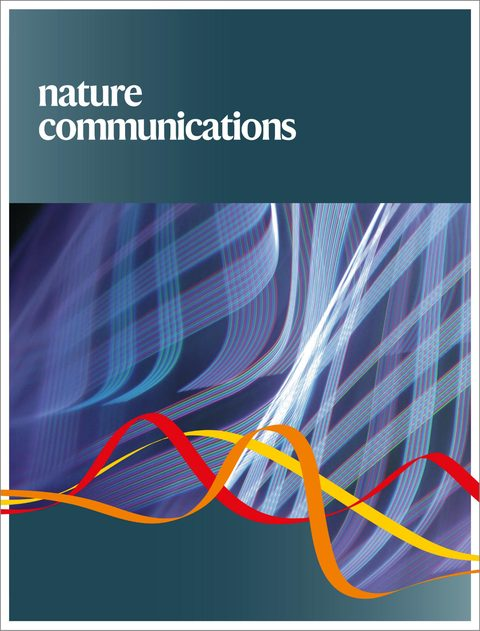
Nature Communications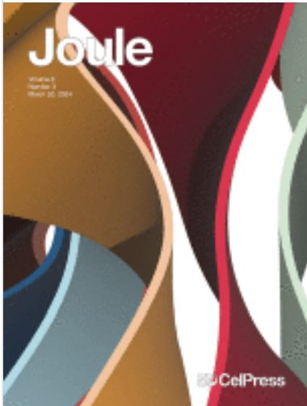
Joule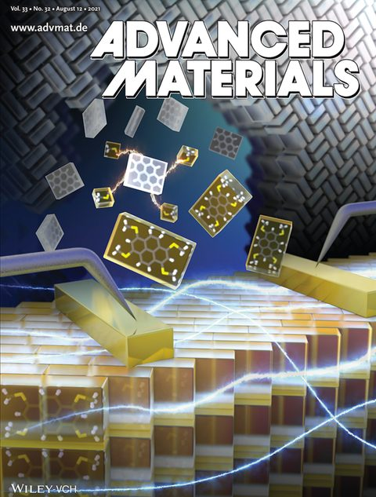
Advanced Materials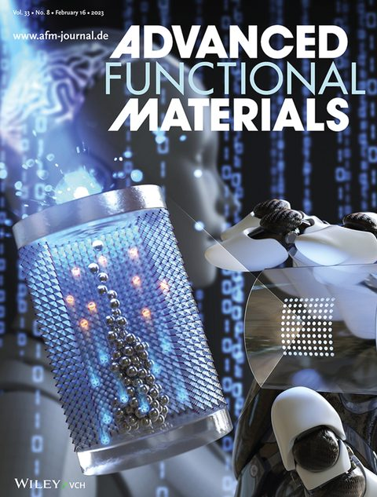
Advanced Functional Materials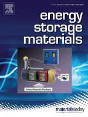
Energy Storage Materials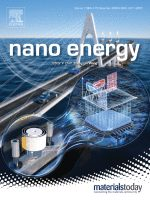
Nano Energy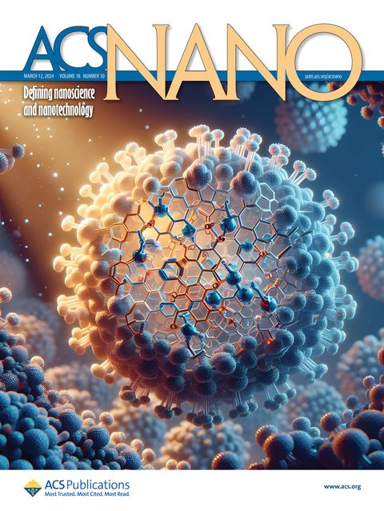
ACS Nano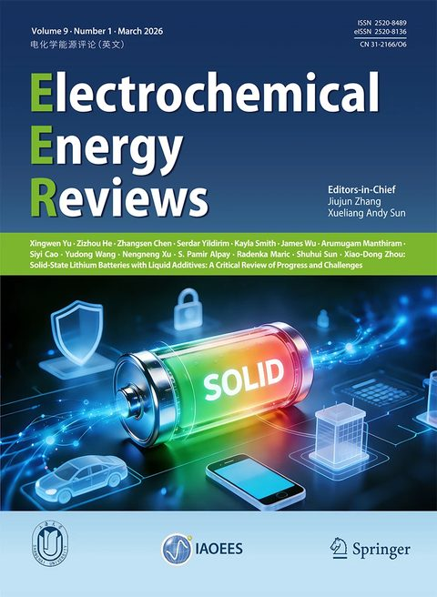
Electrochemical Energy Reviews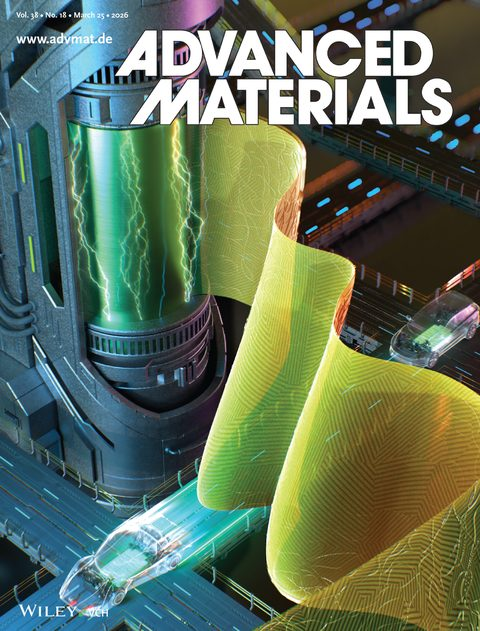
Advanced Materials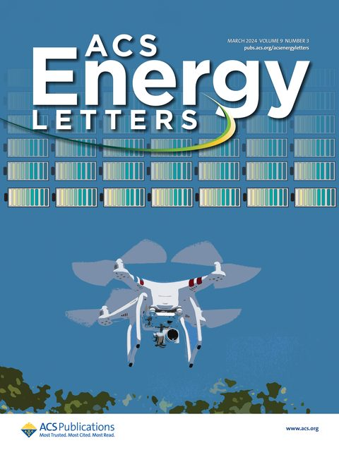
ACS Energy Letters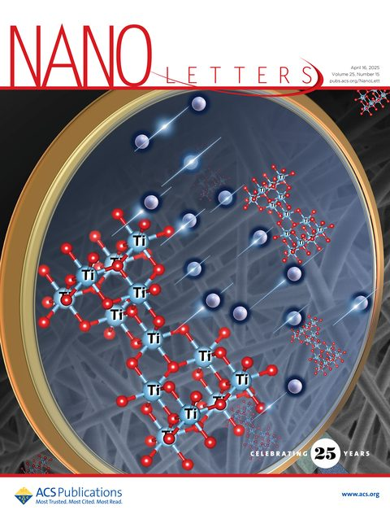
Nano Letters